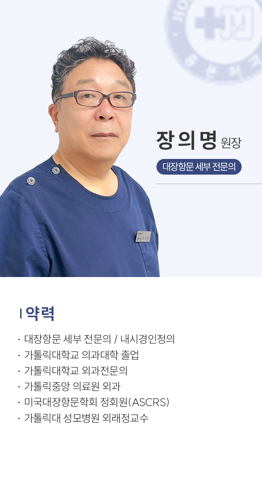
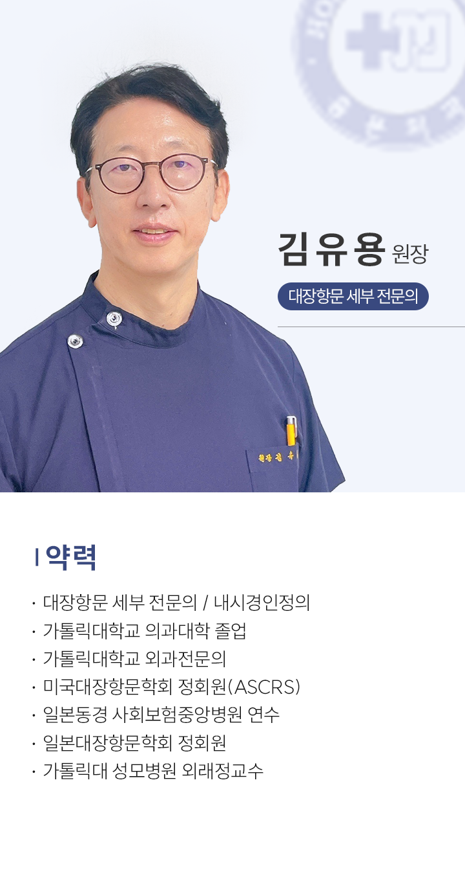
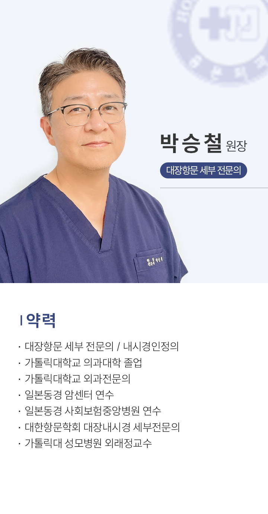

<section id="sub-article">
	<style type="text/css">
		@import url('assets/css/SUIT.css');

		section#sub-article {
			padding: 0 0 0 0 !important;
		}

		.sub-article2 {
			padding: 0 10px;
		}

		h2.txt_m {
			font-family: 'suit';
			font-size: 28px;
			font-weight: 600;
			color: #1d2189;
			margin-top: 95px;
			margin-bottom: 5px;
			padding-bottom: 15px;
			text-align: center;
			letter-spacing: -2px;
			background: url('assets/images/tit_line.png') no-repeat bottom;
			padding-bottom: 20px;
		}

		.h2_small {
			font-size: 15px;
			height: 10px;
			margin-top: 20px;
			letter-spacing: 0.5px;
			color: #c4c4c4;
			text-align: center;
			font-weight: 200;
			margin-bottom: 2px;
			text-transform: uppercase;
			display: block;
			margin-bottom: 60px;
		}
	</style>
	<div></div>
	<!-- 의료진 소개 -->

	<section class="sub-article2">
		<article>
			<h2 class="txt_m">의료진 소개</h2>

			<p class="h2_small">HONGMUN CLINIC</p>

			<div></div>

			<div></div>

			<div></div>

		</article>


	</section>

</section>
<!-- //메인영역 -->
